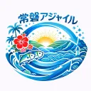
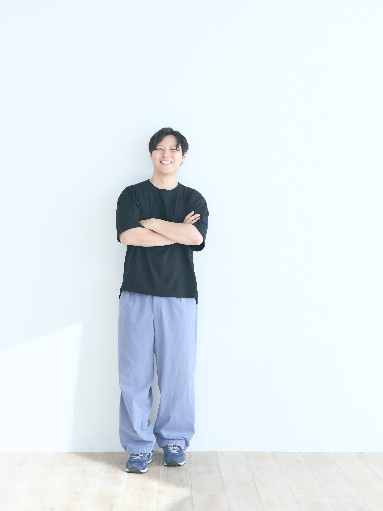
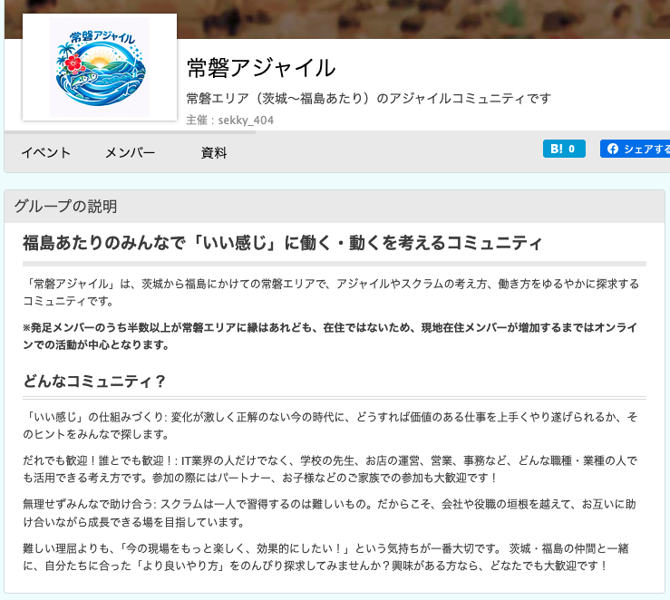

ITコミュニティが紡ぐ関係人口
〜アジャイルコミュニティが いわき で立ち上がった話〜

常磐アジャイル
原田 頌久
自己紹介

原田 頌久
常磐アジャイル コミュニティ
普段の活動 / 本業
クレジットカード会社にて、toB向けのプロダクトオーナーとして勤務。
プライベートでは、コミュニティ運営や個人開発を気ままに嗜む。
東北・福島とのご縁
岩手県盛岡市出身。東京在住ですが、年に3〜4回は東北のどこかにいます。
福島県内にも親戚や同級生が住んでおり、勝手に親近感を抱いています。
昔交際していた方がいわき在住だったので、福島と聞くとエモい気持ちになります笑
本セッションのテーマ
コミュニティは単なるインプットの場を超え、
誰もが「関係人口」として地域に貢献できる、
オープンソースな繋がりを作れるか？
本日のアジェンダ
コミュニティ立ち上げのストーリーと変化
RSGT2026での「見切り発車」から始まったコミュニティと、そこから生まれた予想外の変化
関係人口を生むコミュニティ理論
エフェクチュエーションと「弱い結びつき」による無理のない巻き込みの構造
私たちが大切にしていること、今後の課題
「背伸びをしない」現地第一の運営スタンスと、福島で継続していくための課題
前提整理①「関係人口」とは？
移住でも観光でもない、「地域と継続的に深く関わる人々」
定住人口
地域に住んでいる人
交流人口
観光客・一時訪問者
関係人口 ★
関心を持ち、多様に関わり続ける人
前提整理②「アジャイルコミュニティ」とは？
単なる開発手法にとどまらず、人と人が対話・協力し価値を作る
「実践共同体（CoP = Community of Practice）」
講師
受講者（情報受信）
「情報をもらって終わり」になりがち
共通のテーマを通じた「対話・相互フィードバック・共創」
常磐アジャイルの誕生
〜いわき起点から、しなやかな広がりへ〜
いわき
在住者を起点としたスモールスタート
常磐道沿線・交流
いわきと県外・各地域を繋ぐしなやかな交通・対話ルート
福島全域・沿線
地域境界にとらわれないオープンな参加
将来的な「福島アジャイル」への発展・再出発も大歓迎という柔軟な許容度
最初から境界線を作らないことが、飛び込みやすさを作る！
実際のコミュニティサイト
jouban-agile.connpass.com

常磐アジャイルの立ち上げストーリー①
〜偶然の出会いから、懇親会の熱量へ〜
STEP 1: 偶然の出会い
東京で開催されたRSGT2026の廊下立ち話や懇親会で、福島にゆかりのあるアジャイル関心層が繋がる
STEP 2: 懇親会での盛り上がり
「いつか福島でイベントやりたいね！」という会話に「やっちゃえば？」と返す
最初は東京での何気ない会話でしたが、アジャイルの熱量が福島への想いと共鳴し始めました
常磐アジャイルの立ち上げストーリー②
〜「やっちゃえば？」の一言から見切り発車の立ち上げへ〜
STEP 3: 見切り発車の立ち上げ！
「やっちゃえば？」の一言をきっかけに、計画も中身もないまま、本当にコミュニティが発足へ！
緻密な事前計画ではなく、一歩を踏み出す「見切り発車」が、すべての始まりになりました
神輿を担ぎに集まった仲間たち
〜福島愛とアジャイルが引き寄せた、県内外の多様なメンバー〜
福島愛はあるが県外に住む仲間たちが、少しの頑張る人の熱に当てられて、共に神輿を担ぎに集まりました。
「アジャイル開発を学ぶ」はずの人々が、「福島」をキーワードに繋がり、新たなコミュニティが形成された
立ち上げ後に起きた「変化」
名前決定前の「噂の拡散」
希望者
観察者
お酒の勢いで見切り発車したため、名前が未決定の段階から「噂」だけが一人歩きして参加希望者が集まりました。
地域愛と「関わり方の壁」
見つからない壁
多くのメンバーは「福島を愛しているが、関わるきっかけや仲間がいなかった」人々。コミュニティがその壁を取り払う存在となりました。
立ち上がり＝「エフェクチュエーション」の体現
熟達した起業家の行動原理「エフェクチュエーション」
予期せぬ変化に対応しづらい
不確実な環境下で強い！
＜アジャイル精神との合致＞
「小さく試して、フィードバックを得て、適応する」サイクルそのもの。常磐アジャイルは、巨大な事前計画ではなく「手元の行動」から自然発生的に誕生した
エフェクチュエーションの5つの基本原則
〜予測不能な状況下で、優れた成果を出すための5つのアプローチ〜
1. 手元の鳥の原則
目的からではなく、「自分が今持っている手段」 （自分が誰か、何を知っているか、誰を知っているか）から行動を開始する。
2. 許容可能な損失の原則
期待できる利益（リターン）ではなく、失敗した際に「失っても許容できるコスト」を基準に投資・行動を決める。
3. クレイジーキルトの原則
競合を分析するのではなく、共感してくれる多様な協力者を巻き込み、パートナーの「コミットメント」をパッチワークのように繋ぎ合わせる。
4. レモネードの原則
予期せぬトラブルや偶然の出会い（酸っぱいレモン）を、新しいチャンス（甘いレモネード）へとポジティブに変換して活用する。
5. 飛行機の中のパイロットの原則
自分では予測できない外部環境に身を委ねるのではなく、「自分たちがコントロールできる要素」だけに集中して未来を創る。
エフェクチュエーションの原則と常磐アジャイル
1. 手元の鳥の原則
「福島で学びたい」という自分・仲間の「手元の熱い想い」（手持ちの手段）からスタート。
2. 許容可能な損失の原則
失敗しても失うもののない、「完全無料のオンライン会」や少数のもくもく会から開始。
3. クレイジーキルトの原則
福島愛を持つ県内外のアジャイル関心層を巻き込み、「多様なコミット」をパッチワークのように繋ぎ合わせる。
4. レモネードの原則
福島在住者の不足（トラブル・偶然）を、県外からの「関係人口」の熱い参画へ変換。
5. 飛行機の中のパイロットの原則
外部環境に依存せず、「自分たちがコントロールできる『楽しい活動』」に集中して自らコミュニティを操縦。
「弱い結びつきの強み」が生んだ関係人口
グラノヴェターの社会学理論「弱い結びつきの強み（The Strength of Weak Ties）」
【理論概要】 新しい情報や多様な繋がりは、緊密な身内（強い結びつき）よりも、
ゆるやかな知人・関わり（弱い結びつき）を介してこそ、外部からしなやかに伝播してくるという理論。
同質性が高く、新しい風が入りにくい
縁のなかった外部の人も心理的ハードル低く飛び込める！
常磐アジャイルが大切にしていること
「常磐」と現地第一の選択
最初から広域な「福島」とせず、生活圏内であるいわき市を軸にするため、あえて「常磐」と名付けました。地域に根ざすことを重視しています。
「背伸びをしない」運営
無理に大きなイベントや成果を目指さず、自分たちのできることからコツコツと。身の丈に合った等身大の運営を続けています。
それぞれの都合・スタンス尊重
「来たいときに来て、できる範囲で参加」。子育て、繁忙期、飲み会だけ…など、メンバーが抱える個々のライフスタイルや事情を最優先します。
※今回の登壇も「確実に動ける東京在住メンバー」がたまたまご縁をいただいた等身大の運営体制です
コミュニティの課題とこれから
福島在住の運営仲間を増やす
現在、在住者は2名。現地主体の熱量をさらに高め、いわき地域での当事者（運営に携わってくれる仲間）を増やす必要があります。
背伸びのない現地継続活動
焦って大きなイベントを開くのではなく、いわき現地でのもくもく会やオフライン懇親会など、できる活動をコツコツと継続します。
しなやかな「学びの広がり」
いわき現地の軸足を大切にしながら、常磐線沿線や福島県内外のアジャイル関心層へ、ゆっくりと「学びの架け橋」を広げていきます。
「福島のみんなで『いい感じに働く』を考えるコミュニティにしたい！」
まとめ
小さな「手元の行動（エフェクチュエーション）」から全てが始まる。
地域活性化を直で目的にしなくても、「学び」のコミュニティが関係人口を創出する。
未完成なコミュニティだからこそ、関わり代（余白）がある。
仲間を絶賛募集中です！
全員大歓迎でお待ちしています！
- 福島在住の方 / ゆかりのある方
- 全く縁がないけれど面白そうだと思った方
jouban-agile.connpass.com